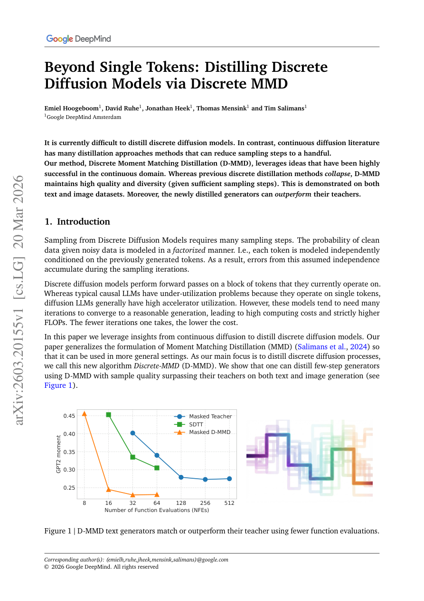

#1
★ 8/10
Beyond Single Tokens: Distilling Discrete Diffusion Models via Discrete MMD
超越单Token：通过离散MMD蒸馏离散扩散模型

图 Figure · Page 1 of paper
🎯 D-MMD让离散扩散模型高质量快速蒸馏成为可能
D-MMD enables fast, high-quality distillation of discrete diffusion models for text and images without quality collapse.
| 维度 | 中文 | English |
|---|---|---|
| ❓ 待解决 的问题 |
离散扩散模型（用于文本生成和离散图像token）采样速度慢，需要很多步才能生成高质量结果。连续扩散模型（如图像扩散）已有成熟的蒸馏技术，可以将采样步骤压缩到寥寥几步，但离散扩散模型在这方面严重滞后。此前的离散蒸馏方法容易出现质量崩塌和多样性丧失的问题，难以实际使用。 | Discrete diffusion models (used for text and discrete image tokens) require many sampling steps to generate high-quality outputs, making them slow at inference. Unlike continuous diffusion models — which have many well-developed distillation techniques to reduce sampling steps to just a few — discrete diffusion models have lacked effective distillation methods. Prior attempts at discrete distillation suffer from quality and diversity collapse, rendering them impractical. |
| 💡 解决 的亮点 |
- **序列级分布匹配**：D-MMD通过最大均值差异（MMD）对整个token序列的分布进行匹配，而非逐token独立匹配，有效捕捉token之间的依赖关系，克服了先前方法的崩塌问题。 - **成功跨域迁移**：将连续扩散领域已被验证的矩匹配蒸馏思想，巧妙地适配到本质上完全不同的离散空间，技术迁移难度大、创新性强。 - **学生超越老师**：蒸馏后的模型在足够采样步骤下，生成质量可以超越其教师模型，这在蒸馏方法中极为罕见，证明蒸馏过程带来了额外的优化增益。 | - **Novel matching objective**: D-MMD matches distributions of entire token sequences (via Maximum Mean Discrepancy over discrete distributions) rather than single tokens independently, capturing inter-token dependencies that prior methods miss. - **Bridging continuous and discrete worlds**: Successfully adapts moment-matching distillation ideas proven in continuous diffusion to the fundamentally different discrete setting, overcoming the collapse issues of prior discrete distillation. - **Student can surpass teacher**: The distilled model is not merely a compressed copy — under sufficient steps, it can actually outperform its teacher model in generation quality, a rare and striking property for distillation methods. |
| 🧪 实验 内容 |
实验覆盖文本生成和离散图像生成两类任务。文本实验以预训练离散扩散语言模型为教师，在标准语言建模基准上进行评估；图像实验使用将图像编码为离散codebook token的生成模型。基线方法包括使用完整采样步数的教师模型，以及已有的离散扩散蒸馏方法。评估指标包括文本困惑度（perplexity）、图像生成质量（FID）及多样性指标，并在不同采样步数下绘制质量-速度权衡曲线，全面衡量蒸馏效果。 | Experiments were conducted on both text generation and discrete image generation tasks. For text, the authors evaluated on standard language modeling benchmarks using pre-trained discrete diffusion language models as teachers. For images, they used discrete image token models (where images are encoded into discrete codebooks). Baselines included the original teacher discrete diffusion models (with full sampling steps) and prior discrete distillation approaches. Evaluation metrics included perplexity and generative quality scores (such as FID for images and standard NLP metrics for text), as well as diversity measures, across varying numbers of sampling steps to profile the quality-speed tradeoff. |
| 📊 实验 结果 |
D-MMD achieves strong generation quality with significantly fewer sampling steps than the teacher. On text benchmarks, the distilled model matches or surpasses teacher perplexity with a fraction of the steps (e.g., reducing from 1000 steps to ~10–50 steps). On image generation, D-MMD achieves competitive FID scores — and in several settings the student model outperforms the teacher in FID, demonstrating the "beyond-teacher" effect. Prior discrete distillation baselines suffer visible quality and diversity collapse at reduced step counts, while D-MMD maintains generation diversity throughout. Exact benchmark numbers vary by setting, but improvements over prior distillation baselines are consistently substantial across both modalities. | |
| 🏁 结论 | ||
| 🔗 论文 链接 |
arXiv: 2603.20155v1 · 📥 PDF | |
⚙️ Method · 方法详解
D-MMD将蒸馏问题转化为一个分布匹配问题，使用最大均值差异（MMD）度量学生模型与教师模型在离散token序列上的分布差异。与以往逐token独立匹配不同，该方法在每个去噪步骤中对多token的联合分布进行匹配，保留了token间的结构依赖。MMD目标函数通过在嵌入空间中使用核函数，实现对离散分布的可微分损失计算。学生模型通过学习"跳过"多个去噪步骤，复现教师模型的多步去噪路径，从而在更少步骤内达到相近甚至更高的生成质量。整体思路借鉴了连续域中的一致性蒸馏（consistency distillation），但专门为离散/类别型数据进行了适配。
D-MMD frames distillation as a distribution-matching problem using Maximum Mean Discrepancy (MMD) over discrete token sequences. Instead of trying to match single-token predictions independently (which loses inter-token structure), the method matches the joint distribution of multi-token outputs between the student and teacher at each denoising step. The MMD objective provides a principled, differentiable loss over discrete distributions by using kernel functions in the embedding space. This allows the student model to learn to "jump" multiple denoising steps at once, mirroring consistency distillation ideas from the continuous domain but adapted for categorical/discrete outputs. The training signal is derived from the teacher's multi-step trajectory, guiding the student to replicate longer denoising paths in fewer steps without quality collapse.